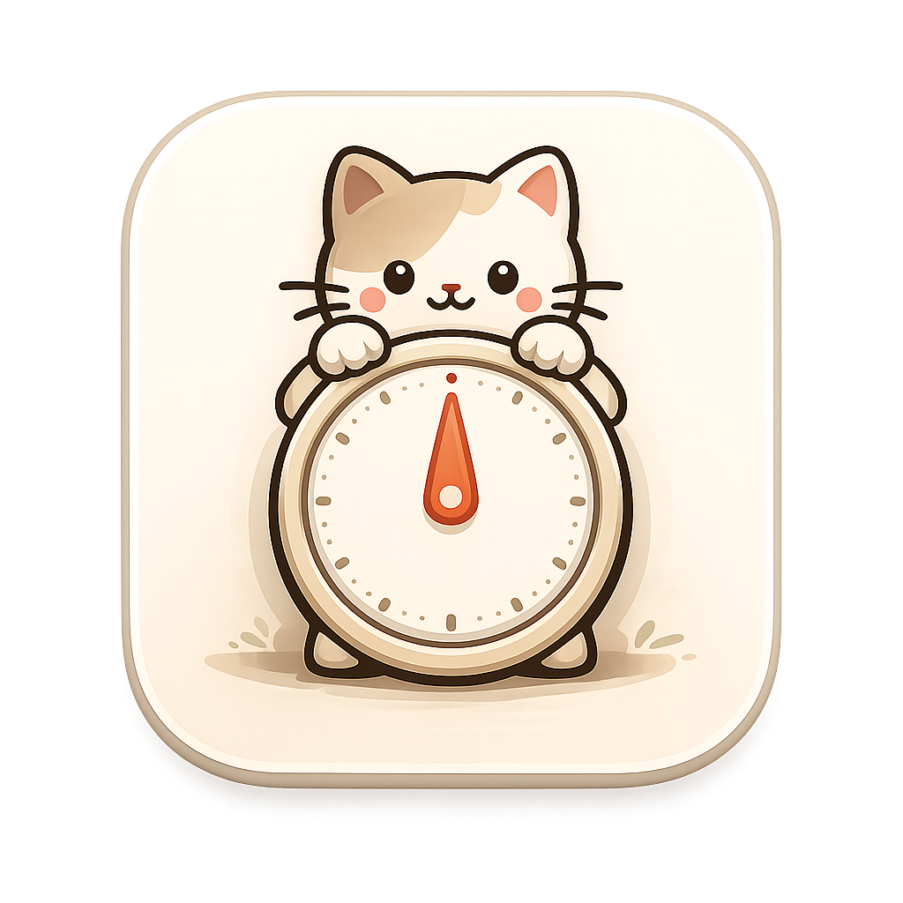
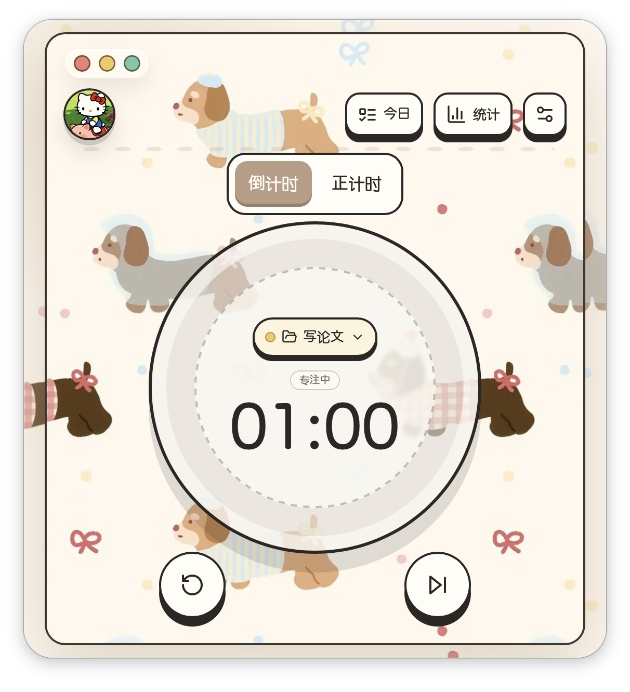
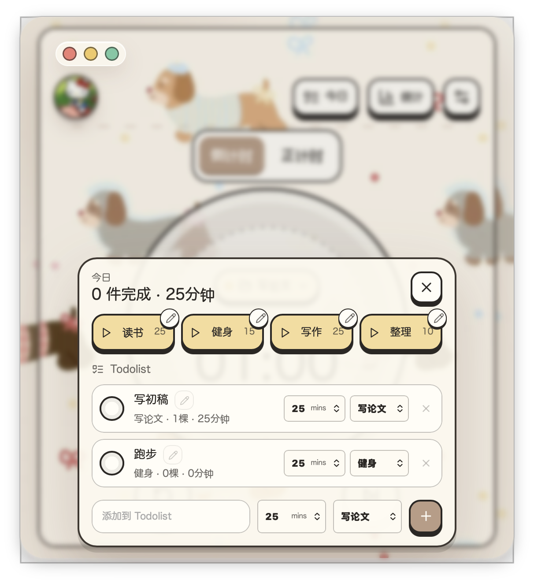
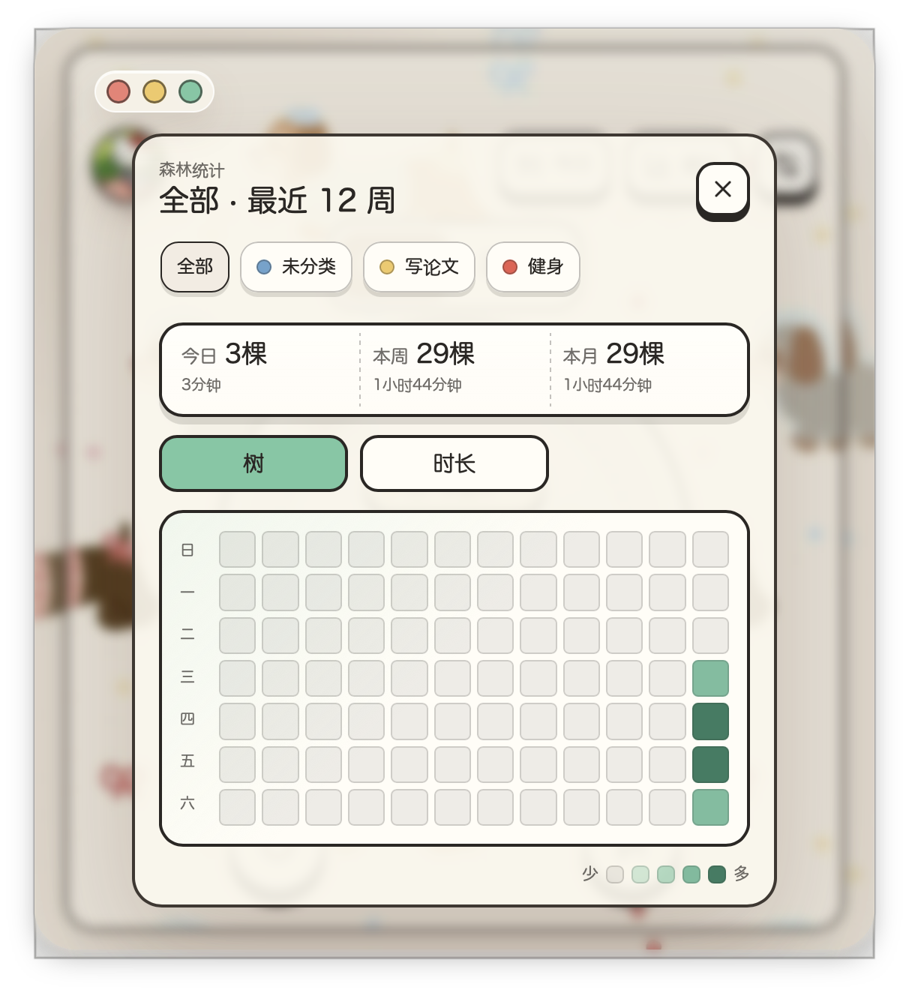
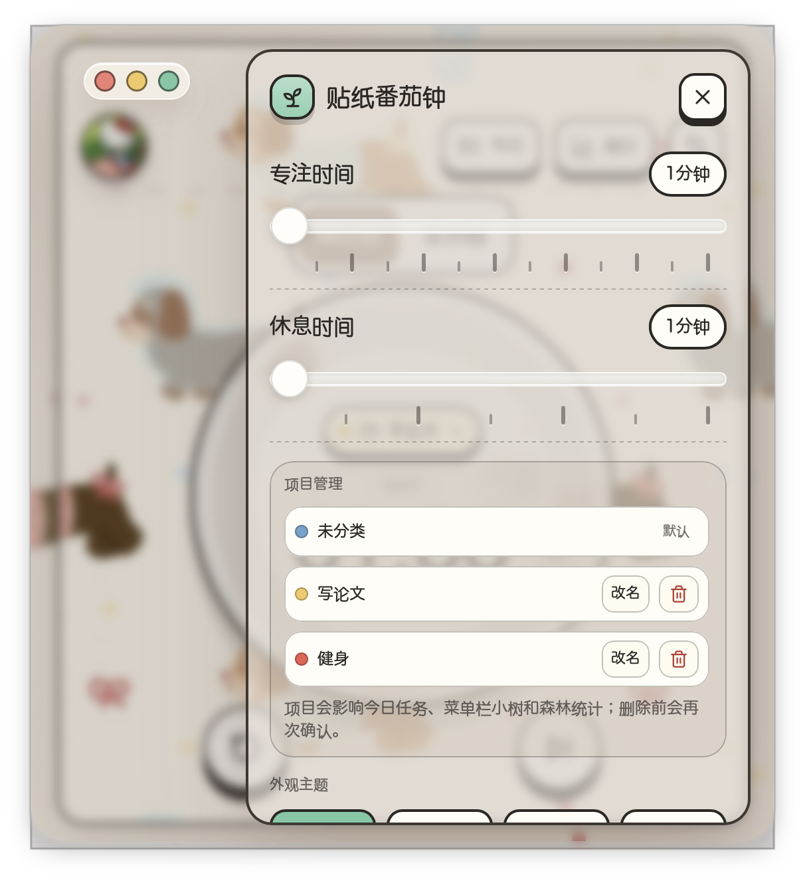
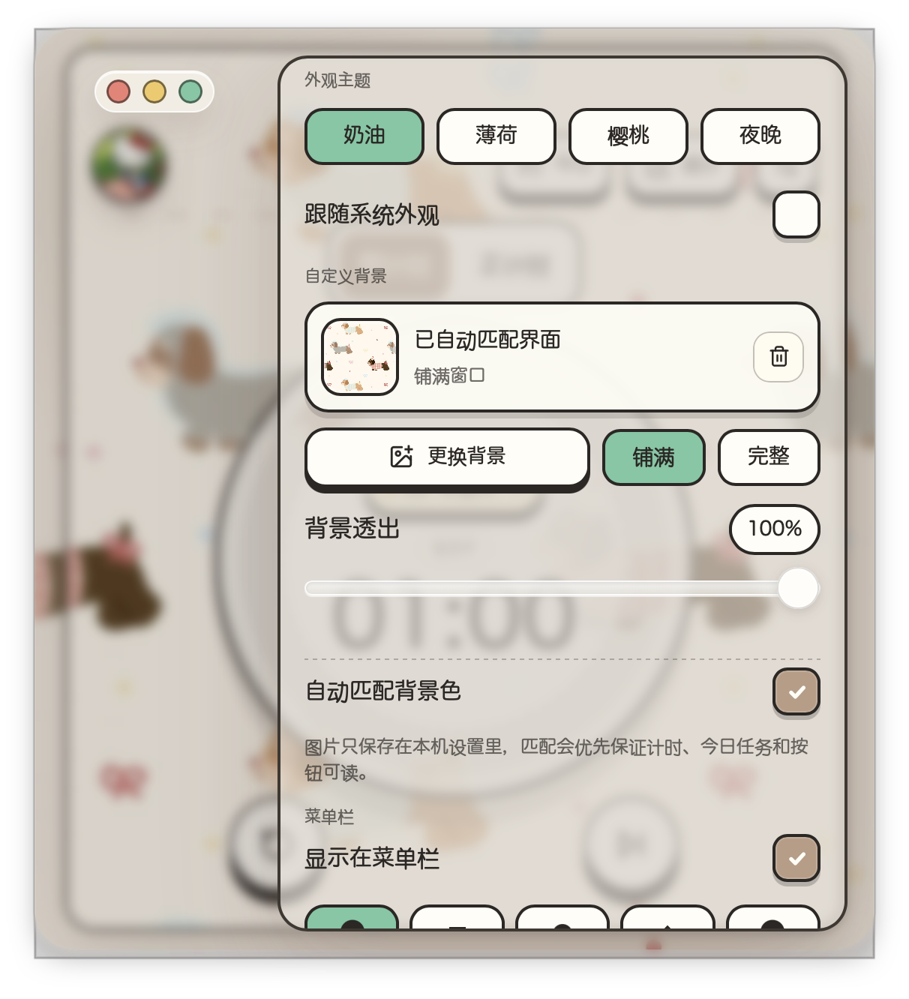
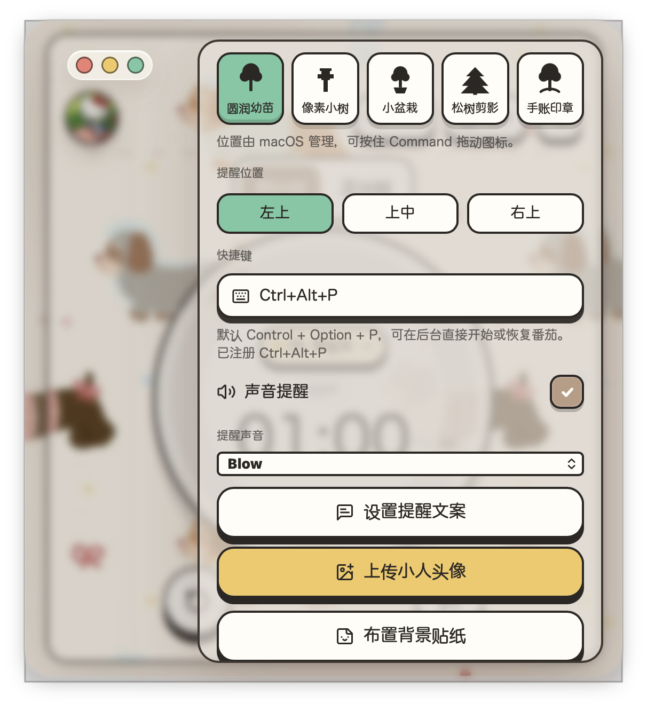

为 Mac 而生的可爱番茄钟
计时 · 种树 · 收贴纸
v1.1.0 · macOS
一款运行在 macOS 菜单栏 的番茄工作法计时器。
把计时、任务、统计打包在一个紧凑的贴纸风格窗口中，
通过手绘树苗、自定义贴纸和 iMessage 风格的提醒弹窗，
让专注变得轻软可触。
🍅 计时 → 🌱 种树 → 💌 贴纸提醒
每一轮专注结束，菜单栏的小树会长大一点，当日累积记录到森林统计

左上
可编辑头像
中央拨盘
开始/暂停按钮
右上
今日Todo+统计+设置
默认 25 分钟专注 + 5 分钟休息
时间可在设置中自由调节
完成一轮 = 种一棵树
不限时自由计时
每满一个周期自动计为一棵树
适合自由工作节奏
读书 25min · 健身 15min · 写作 25min · 整理 10min
点击直接启动，不用调时间、选项目
主界面中央圆环
点击开始/暂停
窗口自动最小化
打开今日面板
点击预设场景卡片
一键启动专注
默认 Control+Option+P
任何时候按下即可开始
无需切回主窗口
"宝宝辛苦啦~ ♡ 休息一下，喝口水。"
"专注开始啦 ♡ 计时已经开始，慢慢来。"
圆润幼苗 · 像素小树
小盆栽 · 松树剪影
手账印章
5 个生长阶段
随倒计时进度变化
从幼苗到满树
休息期间切换
充电电池样式
不计算为树数
Retina 适配 · 显示剩余时间和今日树数 · 按住 ⌘ 可拖动调整位置

创建/重命名/删除项目
8 种颜色区分
最多 24 个项目
Todolist 和统计按项目归类
未分类的专注结束后
可转移到指定项目
上传图片作为贴纸
自由拖动/旋转/翻转/缩放
专用编辑模式 · 最多 24 张
上传背景图 · 铺满/完整
调节透明度
自动匹配配色方案

热力图
类似 GitHub 贡献图
双指标
树数 / 专注时长
项目筛选
按项目查看
今日 / 本周 / 本月 三级汇总



外观主题 · 自定义背景 · 提醒位置与声音 · 快捷键 · 菜单栏树样式 · 项目与贴纸管理
奶油 · 薄荷 · 樱桃 · 夜晚
可跟随系统深浅色自动切换
14 种 macOS 系统音效
Basso / Blow / Frog / Ping…
默认 Ctrl+Alt+P
进入捕获模式自定义
专注开始/结束
休息开始/结束
标题正文均可改
1. 前往 GitHub Releases 下载最新 .dmg
2. 将 贴纸番茄钟.app 拖入「应用程序」
3. 终端解除隔离（只需一次）：
⚠ 应用未签名，首次使用必须执行上述命令 · 仅支持 macOS (Apple Silicon)
定时 · 种树 · 收贴纸
让专注变得软软的、可爱的
Yukon594 / stickers-pomodoro · MIT License
github.com/Yukon594/stickers-pomodoro